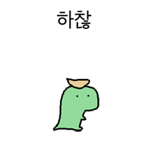

        <section class="slide c orb-b" data-n="[킥] 한 명이 하면 이상한 사람이에요. 세 명이 하면 트렌드입니다.
        
        [톤 힘 있게, 동지애를 담아] 전략 4.
        
        [청중 보기] 혼자 하지 마세요.
        
        먼저 2~3명을 모으세요. 하찮은 질문이라도 받아줄 수 있는 동료가 되어주세요. 거기서 시작이에요.
        
        그리고 중요한 건 — 성공을 보여주면 위협이 됩니다. 대신 실패를 보여주세요. 'AI한테 이거 시켜봤는데 완전 못 하더라' — 이 한마디가 신뢰를 만들어요. 같은 편이 되는 거죠.">
          <div class="layer-mid" style="background:radial-gradient(ellipse at 50% 50%,rgba(212,165,116,0.22) 0%,transparent 45%);"></div>
          <div class="tag">전략 3</div>
          <h2><span class="em">동맹</span>을 만들어라</h2>
        
          <!-- 상단: 하찮 이미지 + 메시지 -->
          <div style="display:flex;flex-direction:column;align-items:center;margin:16px auto 0;gap:10px;">
            <div style="width:140px;height:140px;border-radius:16px;overflow:hidden;background:#fff;padding:6px;box-shadow:0 6px 24px rgba(0,0,0,.4);">
              
            </div>
            <p style="font-size:clamp(16px,1.4vw,21px);color:var(--g400);line-height:1.5;text-align:center;">하찮은 질문이라도 받아줄 수 있는 대상이 되어주고 <span style="color:var(--copper);font-weight:700;">빌드업시켜라.</span></p>
          </div>
        
          <!-- 4카드 -->
          <div style="display:grid;grid-template-columns:repeat(4,1fr);gap:16px;max-width:1100px;margin:20px auto 0;">
        
            <!-- 1 -->
            <div style="background:rgba(212,165,116,.05);border:1px solid rgba(212,165,116,.2);border-radius:var(--radius);padding:24px 20px;box-shadow:0 6px 24px rgba(0,0,0,.5),0 1px 0 rgba(255,255,255,.03) inset;backdrop-filter:blur(8px);text-align:center;">
              <div style="width:36px;height:36px;border-radius:50%;background:var(--copper);color:#000;font-family:'Inter',sans-serif;font-size:15px;font-weight:800;display:flex;align-items:center;justify-content:center;margin:0 auto 14px;">1</div>
              <div style="font-size:clamp(16px,1.4vw,20px);font-weight:700;color:var(--white);margin-bottom:10px;">2~3명 먼저 모으기</div>
              <div style="font-size:clamp(13px,1vw,15px);color:var(--g500);line-height:1.6;">한 명 = 이상한 사람<br>세 명 = 트렌드</div>
            </div>
        
            <!-- 2 -->
            <div style="background:rgba(77,201,196,.04);border:1px solid rgba(77,201,196,.2);border-radius:var(--radius);padding:24px 20px;box-shadow:0 6px 24px rgba(0,0,0,.5),0 1px 0 rgba(255,255,255,.03) inset;backdrop-filter:blur(8px);text-align:center;">
              <div style="width:36px;height:36px;border-radius:50%;background:var(--teal);color:#000;font-family:'Inter',sans-serif;font-size:15px;font-weight:800;display:flex;align-items:center;justify-content:center;margin:0 auto 14px;">2</div>
              <div style="font-size:clamp(16px,1.4vw,20px);font-weight:700;color:var(--white);margin-bottom:10px;">실패를 무기로</div>
              <div style="font-size:clamp(13px,1vw,15px);color:var(--g500);line-height:1.6;">"AI가 이거 못 하더라"<br>→ 신뢰가 생긴다</div>
            </div>
        
            <!-- 3 -->
            <div style="background:rgba(212,165,116,.05);border:1px solid rgba(212,165,116,.2);border-radius:var(--radius);padding:24px 20px;box-shadow:0 6px 24px rgba(0,0,0,.5),0 1px 0 rgba(255,255,255,.03) inset;backdrop-filter:blur(8px);text-align:center;">
              <div style="width:36px;height:36px;border-radius:50%;background:var(--copper);color:#000;font-family:'Inter',sans-serif;font-size:15px;font-weight:800;display:flex;align-items:center;justify-content:center;margin:0 auto 14px;">3</div>
              <div style="font-size:clamp(16px,1.4vw,20px);font-weight:700;color:var(--white);margin-bottom:10px;">현업 언어로 번역</div>
              <div style="font-size:clamp(13px,1vw,15px);color:var(--g500);line-height:1.6;">"프롬프트 엔지니어링"<br>→ "질문 잘 하는 법"</div>
            </div>
        
            <!-- 4 -->
            <div style="background:rgba(77,201,196,.04);border:1px solid rgba(77,201,196,.2);border-radius:var(--radius);padding:24px 20px;box-shadow:0 6px 24px rgba(0,0,0,.5),0 1px 0 rgba(255,255,255,.03) inset;backdrop-filter:blur(8px);text-align:center;">
              <div style="width:36px;height:36px;border-radius:50%;background:var(--teal);color:#000;font-family:'Inter',sans-serif;font-size:15px;font-weight:800;display:flex;align-items:center;justify-content:center;margin:0 auto 14px;">4</div>
              <div style="font-size:clamp(16px,1.4vw,20px);font-weight:700;color:var(--white);margin-bottom:10px;">작은 성과를 공유</div>
              <div style="font-size:clamp(13px,1vw,15px);color:var(--g500);line-height:1.6;">"우리끼리 해봤는데<br>이게 됐다" → 확산</div>
            </div>
        
          </div>
          <div class="ref">Deloitte (2026). 도제식 학습 문화 40% vs 15%</div>
        </section>
